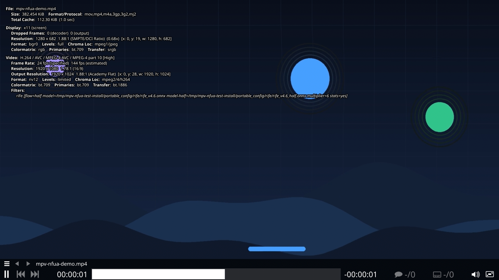
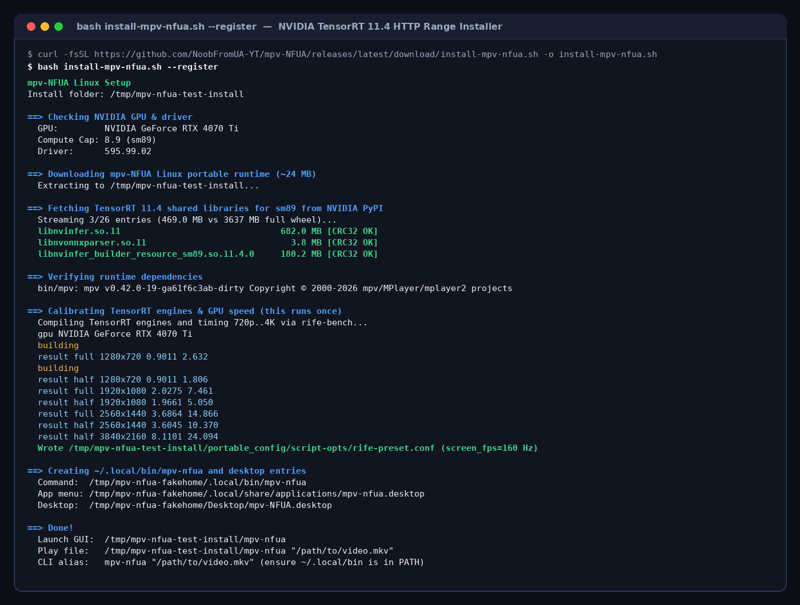
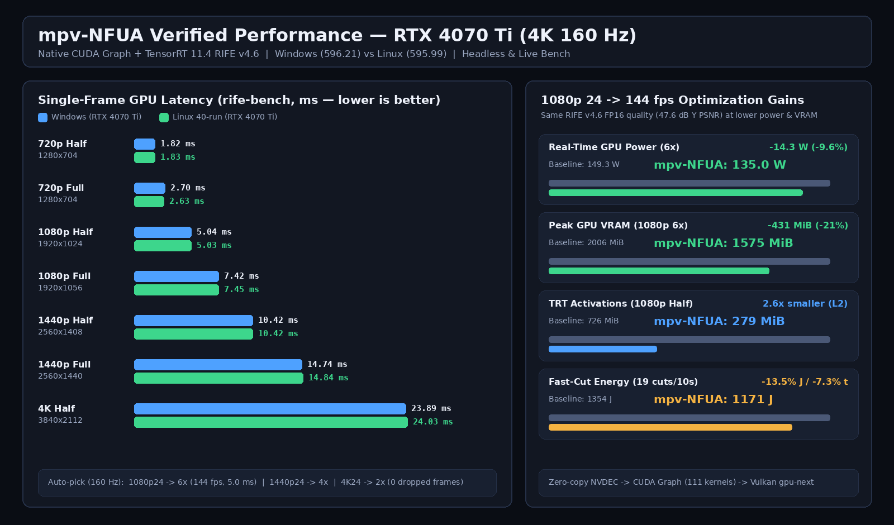

Zero-copy AI frame interpolation inside mpv.
No VapourSynth, no Python frame server, no CPU texture copies. mpv-NFUA runs NVDEC decode, CUDA kernels, TensorRT inference, and Vulkan presentation on one GPU pipeline for both Windows and Linux.
Preview & Measurements


multiplier=6:flow=half) with mpv stats overlay showing 0 dropped frames.



Installation (Windows & Linux)
1-Click Smart Web Installer
Download Install-MPV-NFUA.bat
and double-click it. Needs an NVIDIA RTX 20-series or newer GPU with a CUDA 13-capable driver.
- Pick an install folder (defaults to
%LOCALAPPDATA%\MPV-NFUA). - Installer fetches the 85 MB runtime ZIP and streams only the 3 TensorRT 11.4 DLLs matching your GPU's compute capability from
pypi.nvidia.com(CRC32-verified). - Compiles both TensorRT engines via
rife-bench.exeand writesrife-preset.conffor your monitor's refresh rate. - Optionally creates a Desktop shortcut and sets
mpv-NFUAas your defaultmpv.
1-Click Smart Web Installer
Needs an NVIDIA RTX 20-series or newer GPU with a CUDA 13-capable driver. Prebuilt binaries target
Ubuntu 26.04+ (glibc 2.43, FFmpeg 8, libplacebo 360); other distros can add --build.
curl -fsSL https://github.com/NoobFromUA-YT/mpv-NFUA/releases/latest/download/install-mpv-nfua.sh -o install-mpv-nfua.sh
bash install-mpv-nfua.sh- Installs into
~/.local/share/mpv-nfua(or pass--dir <path>). - Streams only the 3 TensorRT 11.4
.sofiles matching your GPU's compute capability frompypi.nvidia.com(CRC32-verified). - Compiles both TensorRT engines via
rife-benchand writesrife-preset.conffor your monitor's refresh rate. - Optionally adds
~/.local/bin/mpv-nfuaand desktop entries (--register).
Build manually from source/ (Ubuntu 24.04, Arch, Fedora, etc.)
git clone --depth 1 https://github.com/mpv-player/mpv.git
cd mpv && git apply ../source/mpv-changes.patch
cp -r ../source/video/filter/* video/filter/
../source/build.sh
Requires FFmpeg, libplacebo >= 7.387.0, LuaJIT, Vulkan, CUDA Toolkit (nvcc), and TensorRT 11.4.
Copy source/portable_config/ to ~/.config/mpv/ and place rife_v4.6.onnx + rife_v4.6_half.onnx in rife/.
Verified Benchmarks
| Resolution | Flow | Tensor | Windows (Driver 596.21) | Linux (Driver 595.99) | Auto (160 Hz) |
|---|---|---|---|---|---|
| 720p (1280x720) | Full | 1280x704 | 2.70 ms | 2.63 ms | 24->6x, 30->5x, 60->2x |
| 720p (1280x720) | Half | 1280x704 | 1.82 ms | 1.83 ms | High-fps auto |
| 1080p (1920x1080) | Full | 1920x1056 | 7.42 ms | 7.45 ms | — |
| 1080p (1920x1080) | Half | 1920x1024 | 5.04 ms | 5.03 ms | 24->6x, 30->5x, 60->2x |
| 1440p (2560x1440) | Full | 2560x1440 | 14.74 ms | 14.84 ms | — |
| 1440p (2560x1440) | Half | 2560x1408 | 10.42 ms | 10.42 ms | 24->4x, 30->3x, 60->2x |
| 4K (3840x2160) | Half | 3840x2112 | 23.89 ms | 24.03 ms | 24->2x, 30->2x (50/60: off) |
Hotkeys
| Key | Action |
|---|---|
Alt+0 | Automatic multiplier & flow selection (default) |
Alt+1 | Turn RIFE off (original fps) |
Alt+2 .. Alt+6 | Force 2x .. 6x multiplier |
Alt+7 | Cycle HDR tone-mapping look (look.lua) |
Alt+8 | Cycle trim mode (always / nearest / no) |
Alt+9 | Re-measure GPU & monitor refresh rate |
+ / = / - | Step playback speed by 1x (auto-rescales RIFE) |
MBTN_BACK / MBTN_FORWARD | Toggle fullscreen / seek +10s |
o / щ | Quit player |
i | Toggle mpv stats (fps & dropped frames) |